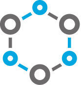

The SRL Approach
This is not your typical chiropractic clinic
Book ServicesHere at Sports Recovery Lab of Ponte Vedra, we are specialists in athletic injuries, with an emphasis on correcting and preventing musculoskeletal injuries and imbalances. We treat individuals and athletes of all ages and abilities, from local beginners and first-time participants to international, world-class athletes. Our expertise also covers common aches and pains experienced with everyday life.
 Our approach and goals remain consistent for each of our patients:
- Identify and correct the current problem.
- Teach the individual to manage their injury while it heals.
- Determine a specific plan to prevent future occurrence.
All treatments are personalized for the individual and their specific needs. We are not a five-minute “in-and-out” chiropractic clinic. A proper diagnosis and treatment takes time, so initial visits can take up to an hour and returning visits sometimes up to a half-hour, one-on-one with the doctor. Each visit is a combination of a complete movement analysis with the most current and effective manual therapy and corrective rehab techniques. If you are looking for a quick “rack and crack” chiropractic visit, we will be happy to make a recommendation for you.
Another reason that Sports Recovery Lab stands apart from the rest is that we know our limitations. We promise that we will be honest with your diagnosis, and that we will not string you along with never-ending treatment plans. If we don’t think we can help you in our office, we will refer you to someone who will. Because many problems are complex in nature and require additional help from other sources, we work with a network of the best sports medicine healthcare professionals in the area.
We look forward to helping you in any way that we can.